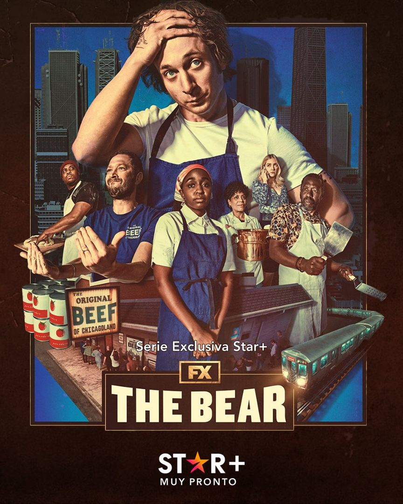
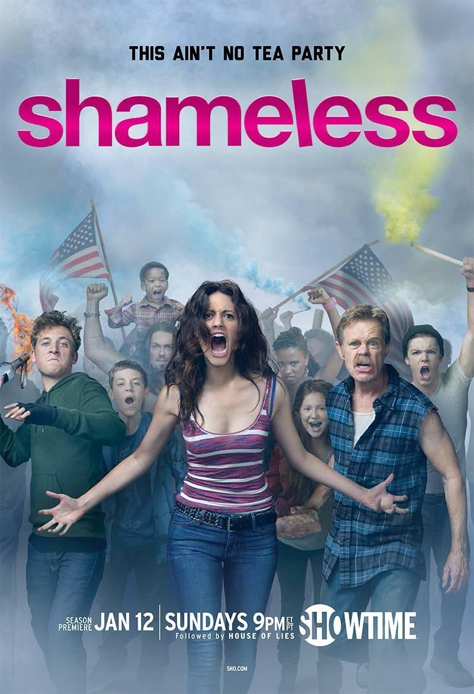

1.The Bear
The Bear es una comedia dramática que sigue a Carmen Berzatto, más conocido como Carmy, un joven chef de alta cocina, que se ve obligado a regresar a Chicago tras la trágica muerte de su hermano. Una vez allí, debe ponerse al mando del Original Beef of Chicagoland, la tienda de bocadillos de su familia.
2.Shameless
Conocemos a la familia disfuncional Gallagher. El padre es alcohólico, la madre los abandonó y la hija mayor, Fiona, intenta mantenerlos unidos.
La serie se desarrolla a través de un relato coral que muestra el crecimiento de cada uno de los hermanos Gallagher. La hija mayor, Fiona, es la que se hace cargo del resto de sus hermanos, Lip, Ian, Debbie, Carl y Liam.
3.The Office

Esta exitosa comedia narra las locuras de unos oficinistas descontentos, liderados por el incompetente jefe Michael Scott, en la empresa de venta de papel Dunder Mifflin. Ve todo lo que quieras. Esta ganadora del Emmy 2006 a la mejor serie de comedia convirtió en estrellas a Steve Carell y Ed Helms, entre otros.